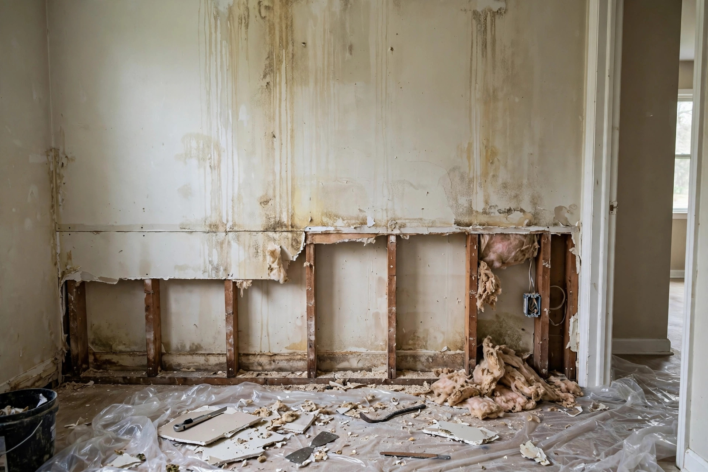

Home / Water Damage / Drywall
Meridian, Idaho · Walls rebuilt rightWet drywall doesn't dry — it gets replaced
Drywall is gypsum wrapped in paper, and that paper is a sponge. Once soaked, the question isn't whether to patch it but how high to cut and how dry the studs must be before new board goes up.

How we decide what stays and what goes
Moisture map the wall
Meters read how high water wicked up the drywall and into the studs. The wet line is often a foot above the visible stain — cutting at the stain leaves wet board behind.
Cut above the damage
Flood cuts run in a straight horizontal line above the highest wet reading, typically 12 to 24 inches off the floor. Straight lines make for clean patches.
Pull wet insulation
Fiberglass batts that wicked water lose their R-value and hold moisture against the studs. They come out with the drywall.
Dry the cavity
Air movers push dry air through the open wall until framing meters read at dry standard. Skipping this step traps moisture behind the new board.
Rebuild and blend
New drywall, tape, texture matched to the room — Meridian's newer homes are mostly orange-peel — then prime and paint. The wall should read as untouched.
What drives the scope
| Situation | Typical repair | Why |
|---|---|---|
| Baseboard-level wicking | 12-inch flood cut | Water wicked up from the floor plate |
| Mid-wall saturation | 24-inch or half-sheet replacement | Deeper soak from longer exposure |
| Full-height damage | Full sheet replacement | Burst pipe spraying the wall cavity |
| Multiple rooms | Phased rebuild | Water traveled along the floor line |
A Paramount nursery wall after a supply-line pop
A toilet supply line in the hall bath let go while the family was at dinner. Water ran under the wall into the nursery next door, soaking the lower two feet of drywall along a six-foot run. The visible damage looked minor — some bubbling paint — but meters showed saturation a full eighteen inches up. The repair was a clean twenty-four-inch flood cut, cavity drying over two days, and a texture blend the parents couldn't find afterward. The paint told no stories.
Texture and paint: the invisible finish
Matching Meridian textures
Most 2000s Meridian homes use orange-peel or light knockdown. We test-spray the match on scrap before touching your wall — the blend has to fool the eye in daylight.
Priming matters
New drywall and joint compound drink paint unevenly. A proper primer seals the patch so the topcoat reads uniform, not blotchy.
Paint to the corner
Touch-up paint almost never matches aged wall paint exactly. For invisible repairs, we paint wall-to-wall or corner-to-corner — the eye can't catch a sheen change at a natural break.
Mold check first
Any drywall that stayed wet more than a day or two gets checked for growth before rebuilding. The EPA advises removing moldy porous materials rather than trying to clean them (EPA — Mold, Moisture & Your Home).
Sources: EPA — Mold, Moisture & Your Home CDC — Mold and Health
Wet drywall questions, answered directly
Can't wet drywall just dry out in place?
The gypsum core can dry, but the paper facing usually doesn't recover — it stays wavy, discolored, and vulnerable to mold. Once saturated, replacement beats rehabilitation.
How high will you have to cut?
Above the highest moisture reading, with margin — usually 12 to 24 inches for floor-level flooding. We show you the meter readings so the cut line makes sense.
Will the patch be visible?
Not if done right. Straight cuts, proper taping, matched texture, primer, and paint to a natural break make the repair disappear. We don't consider it done until you can't find it.
Do you handle the painting too?
Yes — prime and paint are part of the rebuild, not a separate trade to chase. The wall is finished and ready when we leave.
What about the insulation behind it?
Wet fiberglass comes out with the drywall — it can't be dried in place effectively. We replace it with new batts before closing the wall.
Soggy drywall? Let's cut to the fix.
Call, describe the wall, and we'll plan the repair.